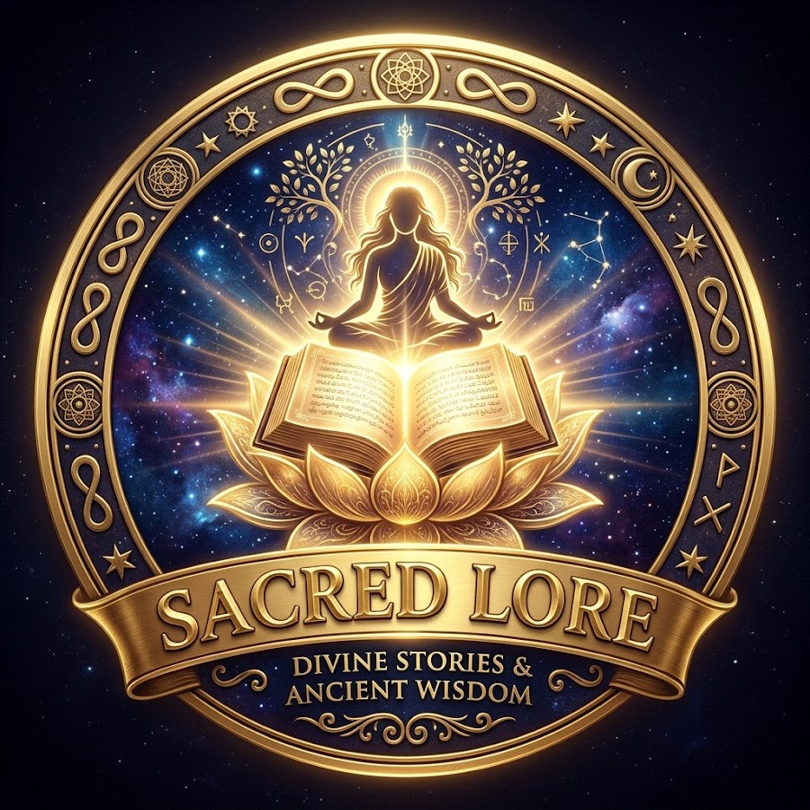

Please subscribe to both channels below to unlock and support these Hindu mythology research and 2D animation master scripts!
Deep-dive mythological documentaries, ancient Indian scripture research, Mahabharata mysteries, and divine cosmology.

Cinematic 2D animation shorts, viral mythological hooks, sacred lore, and quick 60-second Vedic stories.
Click either script below to view its full text, copy it with one click, or download it as a .txt file.